| Fecha | Versión | Descripción |
|---|---|---|
| 14/09/2021 | 1.0.0 | Versión inicial |
| 27/09/2021 | 1.0.1 | Corrección de erratas |
| 05/10/2021 | 1.0.2 | Se añade el tratamiento de String |
| 08/10/2021 | 1.0.3 | Corrección de erratas en ejemplos de recorridos. Implementación en Java de ejemplos que faltaban. |
| 04/09/2024 | 1.1.0 | Se cambia direccionamiento imágenes en fichero. |
| 11/09/2024 | 2.0.0 | Añadimos Dart |
Unidad 2 Programación estructurada. Estructuras de control y repetición
Unidad 2 Programación estructurada. Estructuras de control y repetición1 Objetivos2 Programación Modular3 Programación Estructurada4 Recordando que es un algoritmo4.1 ¿Como se representa un algoritmo?4.2 Calidad de un algoritmo5 Elementos de un algoritmo5.1 Instrucciones de inicio y fin5.2 Instrucciones de asignación. Operadores y expresiones.5.3 Instrucciones de entrada y salida de información.5.4 Instrucciones de control5.5 Estructuras alternativas5.5.1 Estructura alternativa (o condicional) simple5.5.2 Estructura alternativa (o condicional) compuesta5.5.3 Estructuras alternativas (o condicionales) anidadas.5.5.4 Estructura alternativa (o condicional) múltiple.5.6 Estructuras repetitivas5.6.1 Estructura repetitiva Mientras (While)5.6.2 Estructura repetitiva Hacer Hasta (Do-While)5.6.3 Estructura repetitiva Para (For)6 Elementos auxiliares6.1 Contadores6.2 Acumuladores6.3 Interruptores7 Vectores y matrices7.1 Introducción7.2 Estructura de datos: vector7.3 Vectores paralelos7.4 Matrices.7.4.1 Lectura y escritura de matrices
1 Objetivos
El modelo de programación a seguir trata de conseguir, ante todo, programas simples y claros, que puedan ser mantenidos y actualizados fácilmente.
Para conseguir este propósito se siguen los criterios de la Programación Modular y Estructurada.
2 Programación Modular
Esta técnica de programación consiste en dividir un programa en partes bien diferenciadas lógicamente, llamadas MODULOS, que puedan ser analizadas y programadas por separado.
Un Módulo se puede definir como un conjunto formado por una o varias instrucciones lógicamente enlazadas.
A cada módulo se le asigna un nombre, que elige el programador, para poder identificarlo. Cuando en un punto del programa se referencia un módulo, el programa le cede el control para que se ejecuten todas sus instrucciones. Finalizado el mismo, el control se devuelve al punto del programa desde donde se llamó al módulo y se continúa con la ejecución de la instrucción siguiente a la que realizó la llamada.
Si un módulo es lo suficientemente grande o complicado puede subdividirse en otros módulos y éstos a su vez en otros, obteniéndose un diagrama:
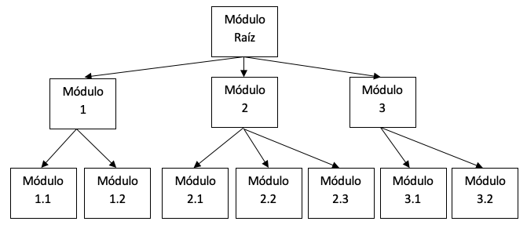
Siempre debe existir un módulo raíz o principal, que es el encargado de controlar y relacionar a todos los demás.
No hay una forma fija para dividir un programa en módulos, pero se deben seguir las siguientes normas:
Cada módulo sólo puede tener un punto de entrada y otro de salida.
El módulo principal debe ser conciso, mostrando claramente los módulos que lo componen y su relación. Es decir, debe indicar la solución completa del problema.
Los módulos deben tener la máxima independencia entre ellos.
Un módulo debe representar por sí mismo una estructura lógica coherente y resolver una parte bien definida del problema.
La programación modular es una técnica que se basa en el desarrollo de programas partiendo de lo general a lo particular, DISEÑO TOP-DOWN. Se comienza considerando qué funciones debe realizar el programa desde un punto de vista muy general, dándolas como resueltas y dejando su diseño (cómo) para un paso posterior. De esta manera se avanza hasta llegar al máximo nivel de detalle.
Es decir, si dentro de un módulo aparece una función cuyo desarrollo completo queremos posponer, esto lo representaremos indicando en ese punto el nombre que tendrá el módulo que lo desarrollará, ocupándonos posteriormente de dicho desarrollo.
La programación modular aporta una serie de ventajas frente a la programación convencional:
Los programas son más sencillos de escribir y depurar, pues se pueden hacer pruebas parciales con cada uno de sus módulos.
La corrección o modificación de un módulo se hace más cómoda y en general, no tiene por qué afectar al resto de los módulos.
Un programa se puede ampliar fácilmente con sólo diseñar los nuevos módulos necesarios.
Un mismo módulo escrito una sola vez, puede ser referenciado desde varios puntos del programa, evitando la repetición de instrucciones.
3 Programación Estructurada
La P.E. es un criterio de programación basado en el TEOREMA DE LA ESTRUCTURA de Bohn y Jacopini: “Todo programa propio, es decir, con un solo punto de entrada y un solo punto de salida, puede ser escrito utilizando únicamente tres tipos de estructuras de control: Estructura secuencial, condicional y repetitiva”.
Cualquier programa por largo y complejo que sea siempre se puede desarrollar mediante el anidamiento apropiado de estos tres tipos de estructuras.
La programación modular y estructurada son criterios complementarios. El primero tiende a dividir un programa en partes más pequeñas, llamadas MÓDULOS, y el segundo se encarga de desarrollar estructuradamente cada una de esas partes.
4 Recordando que es un algoritmo
Recordamos que un algoritmo es una descripción clara y no ambigua de las acciones necesarias para solucionar un problema en un orden determinado. Los elementos que tiene un algoritmo son los siguientes:
Intrucciones
De entrada
De salida
De asignación
Estructuras de control
Bifurcaciones
Repeticiones
4.1 ¿Como se representa un algoritmo?
Se ha de usar un método independiente de cualquier lenguaje de programación. Para ello hay diversas maneras, pero veremos dos:
Diagrama de flujo: se trata de una herramienta gráfica que trabaja con una serie de símbolos (que representan acciones) unidas por flechas (que indican la orden de ejecución).
Pseudocódigo: combinación entre lenguaje natural y de programación.
Junto a estas dos maneras de representar un algoritmo nos haremos servir del lenguaje de programación Java para poder representar.
4.2 Calidad de un algoritmo
Para resolver un problema determinado es posible diseñar una infinidad de algoritmos. La calidad de un algoritmo depende de:
Sencillez: el algoritmo ha de ser lo más sencillo posible.
Eficiencia: es necesario minimizar los recursos que son necesarios para su ejecución. Los recursos a minimizar son:
Tiempo de CPU
Memoria RAM
Espacio en HDD
5 Elementos de un algoritmo
5.1 Instrucciones de inicio y fin
Para crear un algoritmo básico estructurado es necesario que existan al menos estos tres bloques: ALGORITMO, INICIO, FIN ALGORITMO.
ALGORITMO: Al comenzar cualquier algoritmo, este debe ser bautizado, de tal forma que tan solo leer la cabecera sepamos cual va a ser su propósito.
INICIO: Definición de los datos que necesito para solucionar el supuesto, así como órdenes y acciones a realizar.
FIN ALGORITMO. Si es necesario que devuelva algún valor lo retornará y finalización del cuerpo.
En Diagrama de Flujo también nos encontramos con esto:
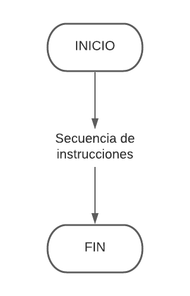
Como hemos indicado, en pseudocódigo lo encontramos así, comenzando por la palabra ALGORITMO y asignandole un nombre:
ALGORITMO EjemploINICIO...FIN ALGORITMO
En Java para indicar el inicio y fin se utilizan las llaves { }. En el ejemplo del programa hola mundo lo podemos ver claramente:
xpublic class HolaMundo { // Llave de inicio del programa
public static void main(String[] args) { // Llave de inicio del método principal System.out.println("Hola Mundo"); } // Llave de fin del método principal } // Llave de fin del programa
5.2 Instrucciones de asignación. Operadores y expresiones.
Una asignación consiste en guardar un valor en una variable. En diagrama de flujo se puede ver de la siguiente forma (por ejemplo asignamos un valor de 45 a la variable edad):
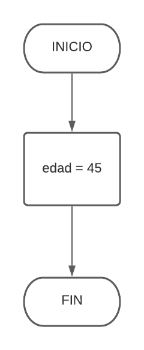
En pseudocódigo lo podemos encontrar de la siguiente forma (lo explicamos un poco más adelante):
xxxxxxxxxxALGORITMO EjemploVAR entero edad;INICIO edad = 45;FIN ALGORITMO
En Java nos lo encontramos así:
xxxxxxxxxxpublic class Ejemplo {
public static void main(String[] args) { int edad = 45; // Declaramos la variable de tipo entero y le asignamos el valor } }
En pseudocódigo, a la hora de declarar la información que necesitamos en el algoritmo para trabajar tendremos 2 clases de tipos de datos:
CONSTANTES: Son datos cuyo valor permanece inalterable durante todo el algoritmo: Ejemplo PI (3,1416).
VARIABLES: Son datos cuyo valor puede modificarse durante el proceso.
Todos los datos precisan de una declaración e inicialización (poner un valor inicial). Esto se especificará antes de comenzar el bloque del cuerpo del programa, es decir, antes de la etiqueta INICIO.
Para distinguirlos vamos a poner dos bloques que nos clasifiquen los datos, un bloque con la expresión CONST (para los datos constantes) y otro bloque con la expresión VAR (para las variables).
Existen diversos tipos de variables, según el número de elementos que puedan almacenar:
SIMPLES: Son datos que almacenan un único valor.: Ejemplo edad
COMPUESTOS: Son que almacenan varios valores relacionados entre sí. Ejemplo: todas las edades de los alumnos de una clase (array de edades)
Tipos de Datos por contenido: Se debe especificar el tipo de dato antes de su nombre. Se inicializan con el carácter igual (=).
DATOS NUMERICOS: Pueden ser de tipo entero o decimal, para distinguir los usaremos las expresiones entero y decimal, los inicializaremos con un valor teniendo en cuenta la coma para los decimales.
DATOS ALFABETICOS Y CARACTERES ESPECIALES: Los especificaremos con la expresión caracter. Los inicializaremos poniendo el carácter entre comillas simples.
DATOS ALFANUMERICOS (CADENAS): Los especificaremos con la expresión cadena. Los inicializaremos poniendo la cadena entre comillas dobles.
DATOS LÓGICOS: Contienen verdadero o falso, los especificaremos con la expresión bool. Los inicializaremos con F o V.
Los nombres de los datos deben ser descriptivos y por estándar de calidad. Tanto las constantes como las variables en minúsculas. Además pueden tener hasta 40 caracteres, deben empezar obligatoriamente con una letra y no pueden contener espacios en blanco, sólo se pueden incluir caracteres especiales como el guión o el punto.
No serían nombres válidos:
xxxxxxxxxxFecha cumpleaños // Lleva un espacio en blanco y una ‘ñ’.aux2 // Está bien definida pero no es muy descriptiva.nombre*nuevo // Lleva un *.
Un ejemplo en pseudocódigo puede ser el siguiente:
xxxxxxxxxxALGORITMO EjemploCONST
DECIMAL PI =3,1416; DECIMAL PTASEUROS=166,369;
VAR
ENTERO edad=0; ENTERO total=1; CARACTER respuesta =’s’; CADENA nombre=”pedro perez”; BOOL esAlumno=V;
INICIO ...FIN ALGORITMO
Por ejemplo podemos crear un algoritmo que calcule el número de horas que hay en 10 años. En diagrama de flujo la solución es la siguiente:
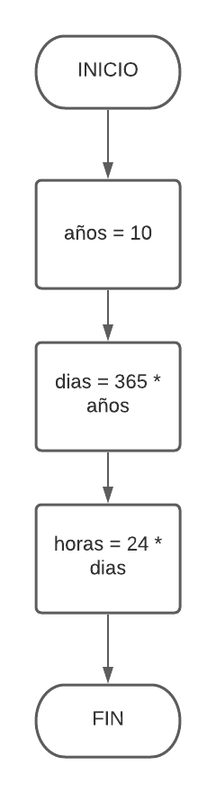
Si se desea, es posible poner varias instrucciones dentro de un mismo rectángulo (para simplificar):
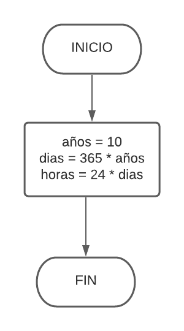
En pseudocódigo lo encontramos de la siguiente forma (ya modificamos AÑOS por ANYOS, ya que la "Ñ" no es un carácter aceptado a la hora de declarar variables/constantes):
xxxxxxxxxxALGORITMO CalculoHorasCONST entero ANYOS = 10;VAR entero dias; entero horas; INICIO dias = 365 * ANYOS; horas = 24 * dias;FIN ALGORITMO
En Java nos lo encontramos de la siguiente forma:
xxxxxxxxxxpublic class CalculoHoras {
public static void main(String[] args) { final int anyos = 45; // Declaración de constante int dias, horas; // Declaración de variables dias = 365 * anyos; // Expresión horas = 24 * dias; // Expresión } }
En todos los lenguajes de programación se utilizan operadores para efectuar operaciones aritméticas. Combinando las variables y constantes en expresiones aritméticas por medio de funciones adecuadas. Los operadores que existen son:
| Nombre | Operadores |
|---|---|
| Asignación | = , := |
| Aritméticos | +, -, *, /, ^, % |
| Unitarios | -, --, ++ (Especialmente recomendados para contadores) |
| Relacionales | <,>,<=,>=,==,!= |
| Lógicos/Booleanos | Y (AND,&&), O (OR, ||), NO (NOT, |) |
| Operadores de bits y de cadenas |
También hemos de tener en cuenta que la prioridad de los operadores es la siguiente:
Paréntesis
Exponentes
Productos y divisiones
Sumas y restas
Relaciones (Negación, Conjunción, Disyunción)
Las expresiones lógicas y relacionales devuelven verdadero o falso.
En programación, una expresión es una combinación de constantes, variables o funciones, que es interpretada (evaluada) de acuerdo a las normas particulares de precedencia y asociación para un lenguaje de programación en particular. Como en matemáticas, la expresión es su "valor evaluado", es decir, la expresión es una representación de ese valor.
Ejemplos de expresiones:
Expresión aritmética: 3+2, x+1, ...
Expresión lógica: x OR y, NOT x, ...
Expresión con predicados: P(a) AND Q(b), ...
5.3 Instrucciones de entrada y salida de información.
Todos los programas informáticos utilizan algún tipo de entrada y salida de información. Es una parte muy importante de la programación ya que, entre otras cosas, es lo que permite a un usuario interactuar con un programa. Por ejemplo:
El usuario introduce información por teclado (entrada).
El programa procesa la información (hace algún cálculo).
El programa muestra el resultado por pantalla (salida).
Todos los programas de ordenador, apps de teléfono, páginas web, etc. siguen estos tres pasos. Tú apretas un botón (o haces click, tocas la pantalla...), luego el procesador lo procesa y por último sucede algo (se visita una página web, se escucha una canción, se envía un whatsapp, etc.).
No tendría sentido crear programas sin entrada ni salida ya que solo realizarían cálculos sin comunicarse con el exterior (como en los dos ejemplos del apartado anterior).
Algunos ejemplos de dispositivos utilizados para entrada y salida de información:
Dispositivos de Entrada: teclado, ratón, micrófono, escáner, gps, wifi, etc.
Dispositivos de Salida: pantalla, altavoces, impresora, wifi, etc.
Por ahora nos vamos a centrar en la entrada y salida más sencilla: el teclado y la pantalla por lo que trabajaremos con las siguientes instrucciones:
LEER (variable) //Solo una variable cada vez
ESCRIBIR (“Texto”, variable) //Se puede combinar
IMPRIMIR (“Texto”, variable) //Similar a escribir pero para que la salida sea la impresora.
Vamos a ver un ejemplo donde calcularemos el área de un círculo (recordamos que el área de un círculo se calcula multiplicando el radio del círculo por el número PI, que es 3,14). En un diagrama de flujo será de la siguiente forma:
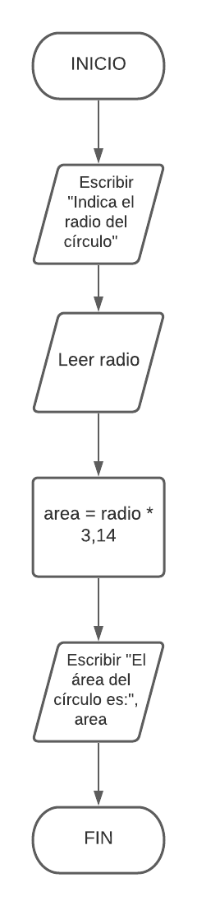
En pseudocódigo lo podemos encontrar de la siguiente:
xxxxxxxxxxALGORITMO CalculoAreaCirculoVAR decimal radio; decimal area; INICIO ESCRIBIR("Indica el radio del círculo"); LEER(radio); area = radio * 3,14; ESCRIBIR("El área del círculo es: ", area);FIN ALGORITMO
En Java será de la siguiente forma:
xxxxxxxxxxpublic class CalculoAreaCirculo {
public static void main(String[] args) { // Declarar el objeto e inicializar con // el objeto de entrada estándar predefinido Scanner sc = new Scanner(System.in); // Solicitamos el radio System.out.println("Indica el radio del círculo"); // Entrada de datos numéricos float (que es el decimal) double radio = sc.nextDouble(); // Cálculo del area double area = radio * 3.14; // Imprimimos el resultado por pantalla System.out.println("El área del círculo es: " + area); } }
5.4 Instrucciones de control
Hasta ahora hemos visto algoritmos (representados como ordinogramas) en los que las instrucciones se ejecutan secuencialmente (una después de la otra). Pero a menudo es necesario diseñar algoritmos cuyas instrucciones no se ejecuten secuencialmente, para lo que es necesario utilizar estructuras de control.
Las estructuras de control son utilizadas para controlar la secuencia (el orden) en el que se ejecutan las instrucciones.
Existen dos tipos:
Estructuras alternativas: Permiten alternan entre distintas instrucciones (ejecutar unas u otras) dependiendo de una condición. Pueden ser simples, dobles o múltiples.
Estructuras repetitivas: Permiten repetir instrucciones (ejecutarlas varias veces).
5.5 Estructuras alternativas
Controlan la ejecución o la no ejecución de una o más instrucciones en función de que se cumpla una condición. Dicho de otra manera, se utilizan para que sucedan cosas distintas dependiendo de una condición.
Por ejemplo, al introducir una contraseña si esta es correcta se iniciará sesión, pero si es incorrecta mostrará un mensaje de error. Por poner otro ejemplo, cuando aprietas una letra o un número del teclado ésta se mostrará por pantalla, pero si es la tecla de intro entonces el cursor bajará a la siguiente línea.
Puede parece obvio pero esto sucede así porque un programador ha utilizado una estructura alternativa para indicar exactamente qué debe suceder en cada caso. Las estructuras alternativas son muy importantes para establecer distintos comportamientos a un programa.
Existen tres tipos de estructuras alternativas o condicionales: Simple, Doble y Múltiples.
Todas ellas utilizan condiciones, como (precio > 200), (edad >= 18), (contraseña == “1234”), etc. En un diagrama de flujo una condición se expresa mediante un rombo.
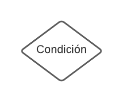
Al explicar los tres tipos de estructuras haremos referencia al pseudocódigo y al código Java.
5.5.1 Estructura alternativa (o condicional) simple
La estructura alternativa simple es muy sencilla. Si la condición es verdadera se ejecutará una o varias instrucciones concretas, pero si es falsa éstas no se ejecutarán. Se representa así:
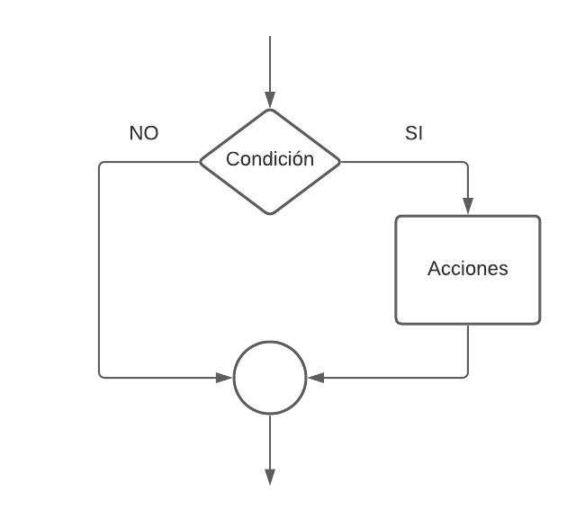
En pseudocódigo nos lo encontraremos de la siguiente forma:
xxxxxxxxxxSI <Condición / Expresión lógica o relacional> ENTONCES <INSTRUCCION>;FIN SI;
Por ejemplo, un programa que pide la edad por teclado, si es mayor o igual a 18 mostrará por pantalla el texto “Mayor de edad”, en caso contrario no hará nada:
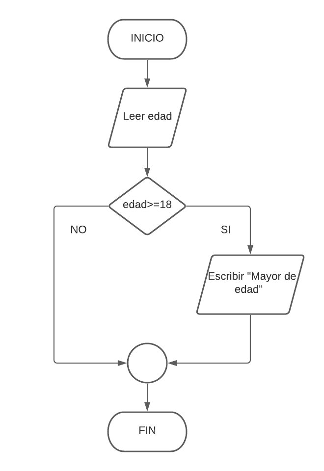
En pseudocódigo será de la siguiente forma:
xxxxxxxxxxALGORITMO MayoriaEdadVAR entero edad; INICIO ESCRIBIR("Indica la edad a comprobar:"); LEER(edad); SI (edad >= 18) ENTONCES ESCRIBIR("Mayor de edad"); FIN SIFIN ALGORITMO
En Java nos lo encontraremos de la siguiente forma:
xxxxxxxxxxpackage mayoriaedad;
import java.util.Scanner;
public class MayoriaEdad {
public static void main(String[] args) { // Pedimos la edad System.out.println("Indica la edad a comprobar: "); // Creamos el objeto que nos permite la entrada por teclado Scanner entrada = new Scanner(System.in); // Inicializamos la variable int edad = 0; // Lectura por teclado de la edad edad = entrada.nextInt(); // Comprobamos que la edad es mayor o igual a 18 if(edad >= 18) { System.out.println("Mayor de edad."); } } }En Dart lo realizaremos de la siguiente forma:
xxxxxxxxxximport 'dart:io';
void main() { // Pedimos la edad print('Indica la edad a comprobar:');
// Lectura por teclado de la edad int edad = int.parse(stdin.readLineSync()!);
// Comprobamos que la edad es mayor o igual a 18 if (edad >= 18) { print('Mayor de edad.'); }}
La estructura condicional más simple en Java es el if, se evalúa una condición y en caso de que se cumpla se ejecuta el contenido entre las llaves {} o en caso de que se omitan se ejecuta el código hasta el primer «;» por lo tanto si no se usan los {} la condición aplica solo a la siguiente instrucción al if.
Podemos observar además, que en Dart es igual
5.5.2 Estructura alternativa (o condicional) compuesta
La estructura alternativa doble es muy similar a la simple. La única diferencia es que si la condición es cierta se ejecutarán unas instrucciones y si es falsa se ejecutarán otras distintas.
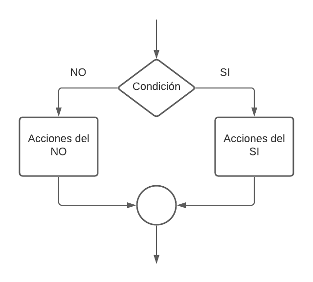
En pseudocódigo nos lo encontraremos de la siguiente forma:
xxxxxxxxxxSI <Condición / Expresión lógica o relacional> ENTONCES < Acciones del SI >;SINO < Acciones del NO>;FIN SI;
Siguiendo el ejemplo anterior crearemos un programa que pide la edad por teclado, si es mayor o igual a 18 mostrará por pantalla el texto “Mayor de edad”, en caso contrario mostrará por pantalla el texto "Menor de edad":
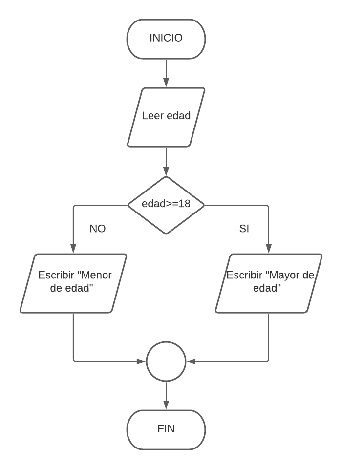
En pseudocódigo será de la siguiente forma:
xxxxxxxxxxALGORITMO MayoriaEdadVAR entero edad; INICIO ESCRIBIR("Indica la edad a comprobar:"); LEER(edad); SI (edad >= 18) ENTONCES ESCRIBIR("Mayor de edad"); SINO ESCRIBIR("Menor de edad"); FIN SIFIN ALGORITMO
En Java nos lo encontraremos de la siguiente forma:
xxxxxxxxxxpackage mayoriaedad;
import java.util.Scanner;
public class MayoriaEdad {
public static void main(String[] args) { // Pedimos la edad System.out.println("Indica la edad a comprobar: "); // Creamos el objeto que nos permite la entrada por teclado Scanner entrada = new Scanner(System.in); // Inicializamos la variable int edad = 0; // Lectura por teclado de la edad edad = entrada.nextInt(); // Comprobamos que la edad es mayor o igual a 18 if(edad >= 18) { System.out.println("Mayor de edad."); } else { System.out.println("Menor de edad."); } } }En Dart:
xxxxxxxxxximport 'dart:io';
void main() { // Pedimos la edad print('Indica la edad a comprobar:');
// Lectura por teclado de la edad int edad = int.parse(stdin.readLineSync()!);
// Comprobamos que la edad es mayor o igual a 18 if (edad >= 18) { print('Mayor de edad.'); } else { print('Menor de edad.'); } }
5.5.3 Estructuras alternativas (o condicionales) anidadas.
Decimos que una estructura condicional es anidada cuando por la rama del verdadero o el falso de una estructura condicional hay otra estructura condicional. En diagrama de flujo será de la siguiente forma:
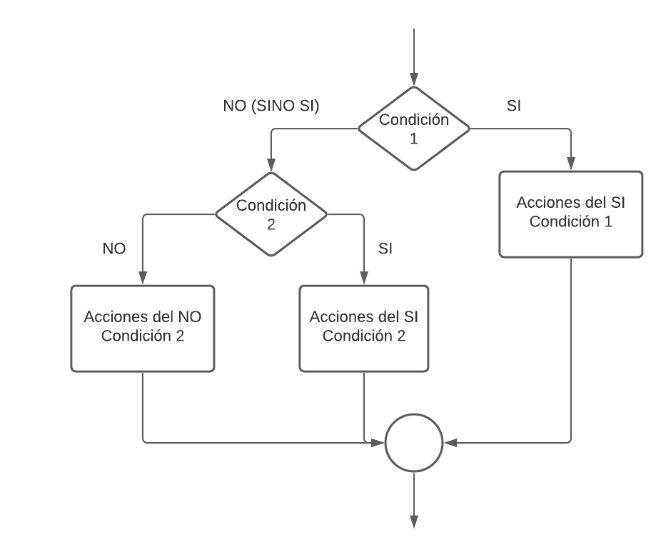
En pseudocódigo nos lo encontraremos de la siguiente forma:
xxxxxxxxxxSI <Condición 1 / Expresión lógica o relacional> ENTONCES < Acciones del SI Condición 1 >;SINO SI <Condición 2 / Expresión lógica o relacional> ENTONCES < Acciones del SI Condición 2 >; SINO < Acciones del NO Condición 2 >;FIN SI;
Siguiendo el ejemplo anterior crearemos un programa que pide la edad por teclado, si es mayor o igual a 18 mostrará por pantalla el texto “Mayor de edad”, en caso contrario, si la edad es menor de 6 mostrará por pantalla "Es un niño/a pequeño/a" sino mostrará por pantalla el texto "Menor de edad":
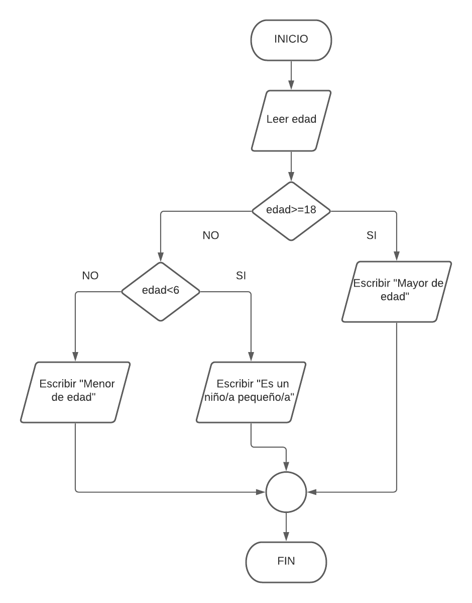
En pseudocódigo será de la siguiente forma:
xxxxxxxxxxALGORITMO MayoriaEdadVAR entero edad; INICIO ESCRIBIR("Indica la edad a comprobar:"); LEER(edad); SI (edad >= 18) ENTONCES ESCRIBIR("Mayor de edad"); SINO SI (edad < 6) ENTONCES ESCRIBIR("Es un niño/a pequeño/a"); SINO ESCRIBIR("Menor de edad"); FIN SI FIN SIFIN ALGORITMO
En Java nos lo encontraremos de la siguiente
xxxxxxxxxxpackage mayoriaedad;
import java.util.Scanner;
public class MayoriaEdad {
public static void main(String[] args) { // Pedimos la edad System.out.println("Indica la edad a comprobar: "); // Creamos el objeto que nos permite la entrada por teclado Scanner entrada = new Scanner(System.in); // Inicializamos la variable int edad = 0; // Lectura por teclado de la edad edad = entrada.nextInt(); // Comprobamos que la edad es mayor o igual a 18 if(edad >= 18) { System.out.println("Mayor de edad."); } else if(edad < 6) { System.out.println("Es un niño/a pequeño/a."); } else{ System.out.println("Menor de edad."); } } }En Dart:
xxxxxxxxxximport 'dart:io';
void main() { // Pedimos la edad print('Indica la edad a comprobar:');
// Lectura por teclado de la edad int edad = int.parse(stdin.readLineSync()!);
// Comprobamos que la edad es mayor o igual a 18 if (edad >= 18) { print('Mayor de edad.'); } else if(edad <= 6){ print('Es un niño/a pequeño/a.'); } else { print('Menor de edad.'); } }
5.5.4 Estructura alternativa (o condicional) múltiple.
La estructura alternativa (o condicional) múltiple permite seleccionar un camino entre varios caminos posibles teniendo como base el valor de la variable seleccionada la cual es comparada con una lista de constantes enteras o de carácter. Cuando el valor de la variable seleccionada es igual a una de las constantes, se ejecuta la instrucción o el grupo de instrucciones que pertenecen a dicha constante. En diagrama de flujo será de la siguiente forma:
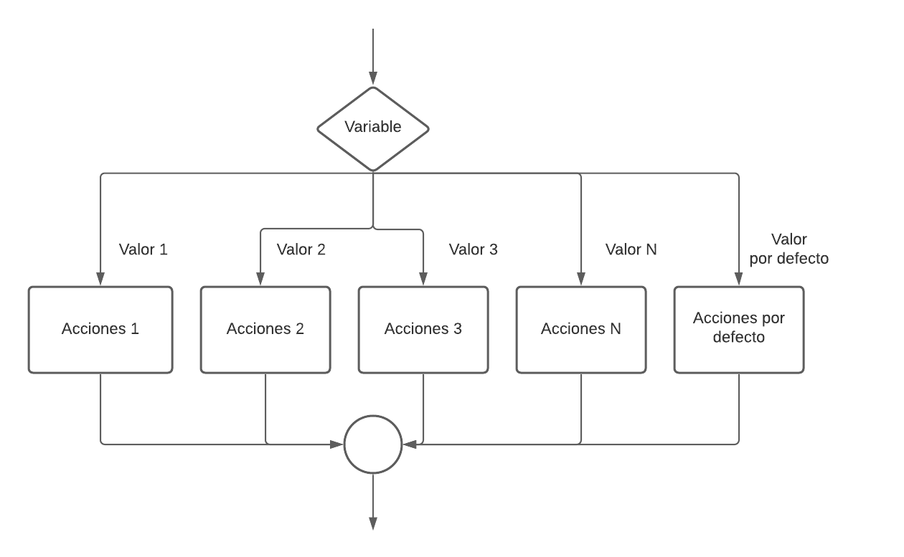
En pseudocódigo nos lo encontraremos de la siguiente forma:
xxxxxxxxxxSEGÚN VALOR(Expresión) VALOR 1: < ACCIONES 1 > VALOR 2: < ACCIONES 2 > … VALOR N: < ACCIONES N > DEFAULT: < ACCIONES POR DEFECTO >FIN SEGÚN
Vamos a poner un ejemplo con esta estructura: se pide diseñar un algoritmo que pide una vocal (suponemos que siempre es mayúscula) y nos dice cuál es. En diagrama de flujo será el siguiente:
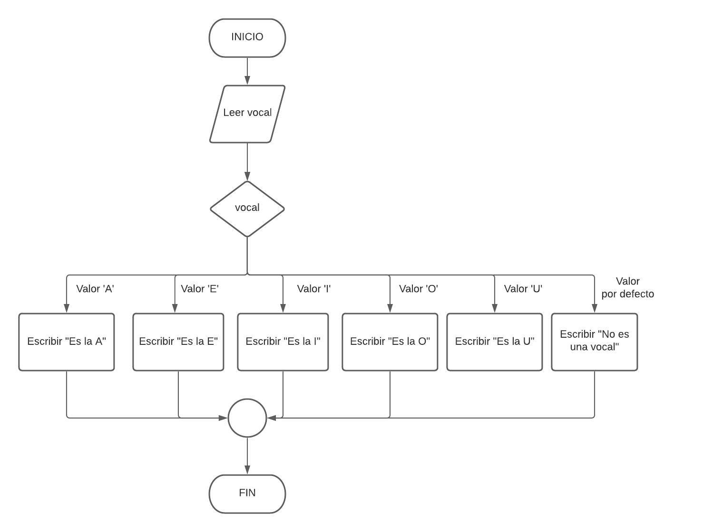
En pseudocódigo será de la siguiente forma:
xxxxxxxxxxALGORITMO VOCALVAR CARACTER vocal;INICIO ESCRIBIR("Dame una vocal: "); LEER(vocal); SEGÚN VALOR(vocal): VALOR 'A': ESCRIBIR("Es la A"); VALOR 'E': ESCRIBIR("Es la E"); VALOR 'I': ESCRIBIR("Es la I"); VALOR 'O': ESCRIBIR("Es la O"); VALOR 'U': ESCRIBIR("Es la U"); DEFAULT: ESCRIBIR("No es una vocal"); FIN SEGÚNFIN ALGORITMO
En Java nos lo encontraremos de la siguiente:
xxxxxxxxxxpackage org.manu;
import java.util.Scanner;
public class Vocal {
public static void main(String[] args) { // Pedimos la vocal System.out.println("Dame una vocal: ");
// Creamos el objeto que nos permite la entrada por teclado Scanner sc = new Scanner(System.in);
// Leemos el primer carácter de la entrada String input = sc.nextLine().toUpperCase();
if (input.isEmpty()) { System.out.println("No has introducido ningún carácter."); return; }
char vocal = input.charAt(0);
// Definimos el switch switch (vocal) { case 'A': System.out.println("Es la 'A'"); break; case 'E': System.out.println("Es la 'E'"); break; case 'I': System.out.println("Es la 'I'"); break; case 'O': System.out.println("Es la 'O'"); break; case 'U': System.out.println("Es la 'U'"); break; // Valor por defecto default: System.out.println("No es una vocal"); break; } }}En Dart:
xxxxxxxxxximport 'dart:io';
void main() { // Pedimos la vocal print('Dame una vocal:');
// Lectura por teclado de la vocal. En Dart leemos una línea y tomamos el primer carácter. String sc = stdin.readLineSync()!; if (sc.isEmpty) { print('No has introducido ningún carácter.'); return; } // Tomamos el primer carácter de la entrada String vocal = entrada[0].toUpperCase();
// Definimos el switch switch (vocal) { case 'A': print("Es la 'A'"); break; case 'E': print("Es la 'E'"); break; case 'I': print("Es la 'I'"); break; case 'O': print("Es la 'O'"); break; case 'U': print("Es la 'U'"); break; // Valor por defecto default: print('No es una vocal'); }}
5.6 Estructuras repetitivas
Las instrucciones repetitivas (o bucles) son aquellas que permiten variar o alterar la secuencia normal de ejecución de un programa haciendo posible que un grupo de operaciones (acciones) se repita un número determinado o indeterminado de veces, dependiendo del cumplimiento de una condición.
Veremos tres tipos:
Bucle Mientras (WHILE)
Bucle Hacer-Hasta (DO-WHILE)
Bucle Para (FOR)
5.6.1 Estructura repetitiva Mientras (While)
En la estructura Mientras o "WHILE" el bloque de acciones se repite mientras la condición sea cierta, evaluándose siempre la condición antes de entrar en el bucle, por ello es posible que las acciones no se ejecuten nunca. En diagrama de flujo será de la siguiente forma:
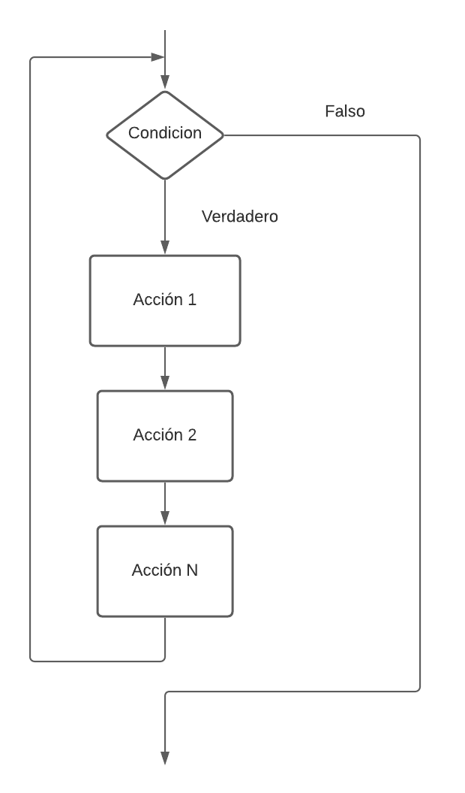
En pseudocódigo nos lo encontraremos de la siguiente forma:
xxxxxxxxxxMIENTRAS Condición HACER ACCIÓN 1 ACCIÓN 2 ... ACCIÓN NFIN MIENTRAS
Vamos a implementar un ejemplo que acabaremos implementandoló en Java: Se pide un programa que pida por consola un número entero y que muestre por pantalla la tabla de multiplicar de dicho número. La salida que buscamos implementar es la siguiente:
xxxxxxxxxx5 * 0 = 05 * 1 = 55 * 2 = 105 * 3 = 155 * 4 = 205 * 5 = 255 * 6 = 305 * 7 = 355 * 8 = 405 * 9 = 455 * 10 = 50
En diagrama de flujo la solución será de la siguiente forma:
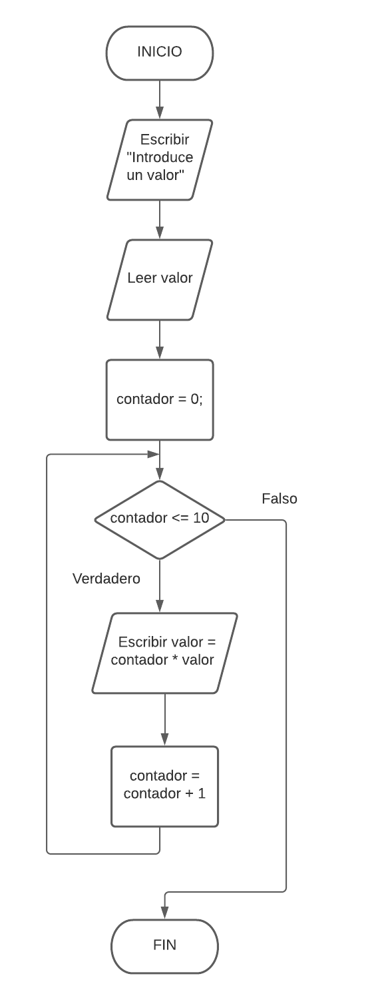
En pseudocódigo será de la siguiente forma:
xxxxxxxxxxALGORITMO TABLAMULTIPLICARVAR ENTERO valor; ENTERO contador;INICIO ESCRIBIR("Dame un valor: "); LEER(valor); contador = 0; MIENTRAS (contador <= 10) HACER ESCRIBIR(valor + " = " + valor + " * " + contador + " = " + (valor*contador)); CONTADOR = CONTADOR + 1; FIN MIENTRASFIN ALGORITMO
En Java nos lo encontraremos de la siguiente:
xxxxxxxxxxpackage tablamultiplicar;
import java.util.Scanner;
public class TablaMultiplicar {
public static void main(String[] args) { // Pedimos un valor System.out.println("Dame un valor: "); // Creamos el objeto que nos permite la entrada por teclado Scanner sc = new Scanner(System.in); // Definimos la variable para el valor y para el contador int valor = sc.nextInt(); int contador = 0; // Recorremos con el bucle comprobando la variable contador while (contador <= 10){ // Mostramos por pantalla la multiplicación actual System.out.println(valor + " = " + valor + " * " + contador + " = " + (valor*contador)); // Incrementamos el contador contador = contador + 1; } }}En Dart:
xxxxxxxxxximport 'dart:io';
void main() { // Pedimos un valor print('Dame un valor:');
// Leemos el valor desde el teclado int valor = int.parse(stdin.readLineSync()!);
// Definimos la variable contador int contador = 0;
// Recorremos con el bucle comprobando la variable contador while (contador <= 10) { // Mostramos por pantalla la multiplicación actual print('$valor * $contador = ${valor * contador}');
// Incrementamos el contador contador += 1; }}
5.6.2 Estructura repetitiva Hacer Hasta (Do-While)
En la estructura "hacer hasta" o “DO-WHILE”, el bloque de instrucciones se repite mientras que la condición sea cierta, y la condición se evalúa al final del bloque por lo que siempre se ejecutarán al menos una vez el bloque de instrucciones. En diagrama de flujo será de la siguiente forma:
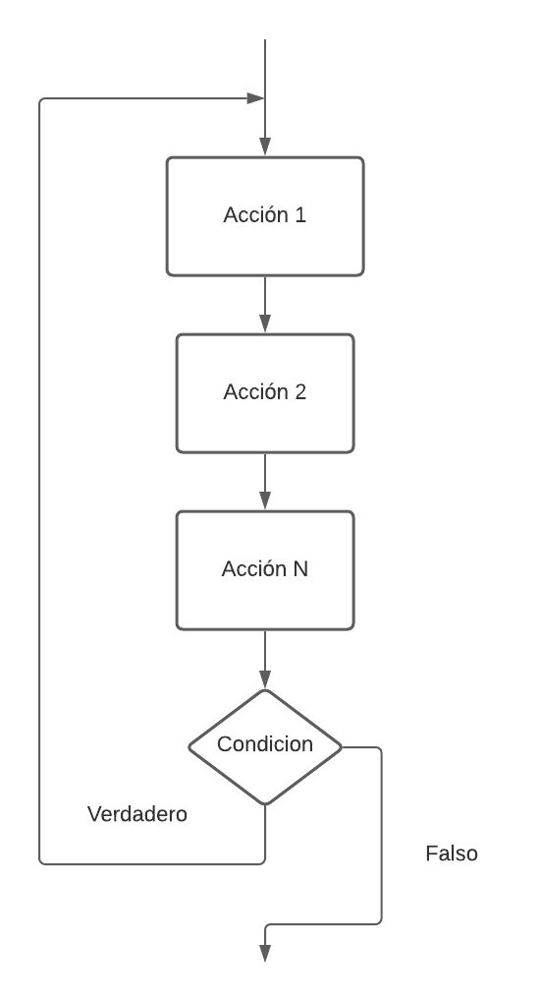
En pseudocódigo nos lo encontraremos de la siguiente forma:
xxxxxxxxxxREPETIR ACCIÓN 1 ACCIÓN 2 ... ACCIÓN NMIENTRAS Condición.
Siguiendo el ejemplo anterior vamos a implementar el mismo programa pero usando esta estructura. En diagrama de flujo quedará de la siguiente forma:
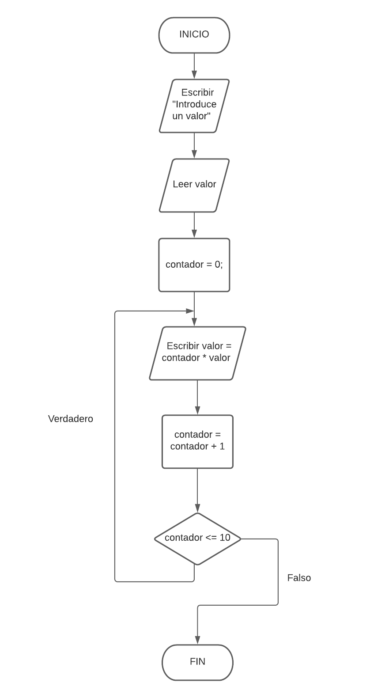
En pseudocódigo será de la siguiente forma:
xxxxxxxxxxALGORITMO TABLAMULTIPLICARVAR ENTERO valor; ENTERO contador;INICIO ESCRIBIR("Dame un valor: "); LEER(valor); contador = 0; HACER ESCRIBIR(valor + " * " + contador + " = " + (valor*contador)); CONTADOR = CONTADOR + 1; MIENTRAS (contador <= 10) FIN HACER-MIENTRASFIN ALGORITMO
En Java nos lo encontraremos de la siguiente:
xxxxxxxxxxpackage tablamultiplicar;
import java.util.Scanner;
public class TablaMultiplicar {
public static void main(String[] args) { // Pedimos un valor System.out.println("Dame un valor: "); // Creamos el objeto que nos permite la entrada por teclado Scanner entrada = new Scanner(System.in); // Definimos la variable para el valor y para el contador int valor = entrada.nextInt(); int contador = 0; // Recorremos con el bucle comprobando la variable contador do { // Mostramos por pantalla la multiplicación actual System.out.println(valor + " * " + contador + " = " + (valor*contador)); // Incrementamos el contador contador = contador + 1; } while (contador <= 10); }}En Dart:
xxxxxxxxxximport 'dart:io';
void main() { // Pedimos un valor print('Dame un valor:'); // Leemos el valor desde el teclado int valor = int.parse(stdin.readLineSync()!); // Definimos la variable contador int contador = 0;
// Bucle do-while do { // Mostramos por pantalla la multiplicación actual print('$valor * $contador = ${valor * contador}'); // Incrementamos el contador contador += 1; } while (contador <= 10); // Condición para continuar el bucle}
5.6.3 Estructura repetitiva Para (For)
En la estructura Para o “FOR” se conoce de antemano el número de veces que se ejecutará el bloque de instrucciones.
El bloque de acciones se repite mientras que la condición sea cierta, evaluándose siempre la condición antes de entrar en el bucle, por ello es posible que las acciones no se ejecuten nunca.
Esta explicación es idéntica a la del bucle WHILE, pero un bucle FOR debe cumplir las siguientes características:
La variable contador se inicializa con un valor inicial.
La condición siempre debe ser: variable_contador <= valor_final.
En cada interacción, la variable contador se incrementa en un determinado valor de forma automática.
En diagrama de flujo será de la siguiente forma:
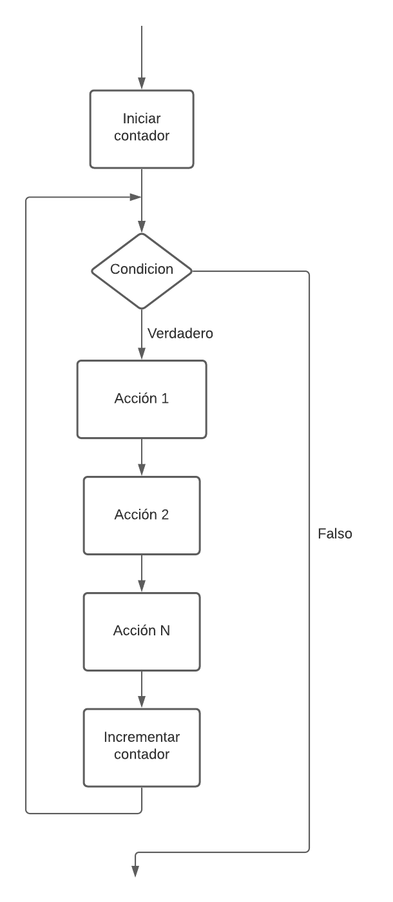
En pseudocódigo nos lo encontraremos de la siguiente forma:
xxxxxxxxxxPARA contador DE ValorInicial A ValorFinal CON Incremento = n ACCIÓN 1 ACCIÓN 2 ... ACCIÓN NFIN PARA
Siguiendo el ejemplo anterior vamos a implementar el mismo programa pero usando esta estructura. En diagrama de flujo quedará de la siguiente forma:
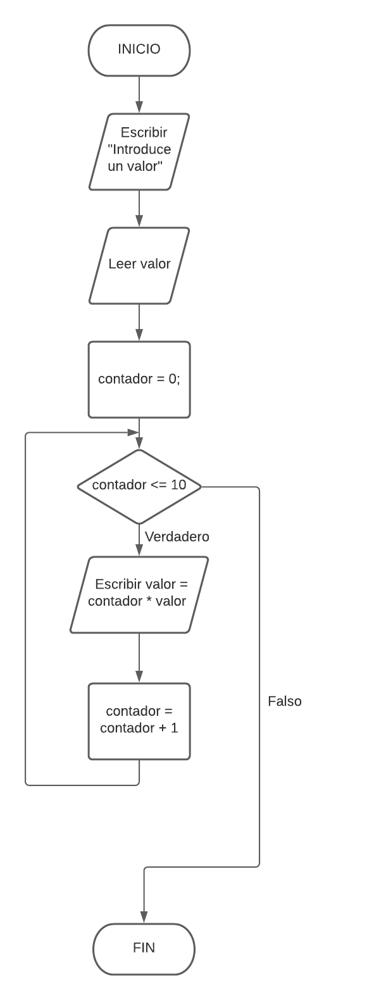
En pseudocódigo será de la siguiente forma:
xxxxxxxxxxALGORITMO TABLAMULTIPLICARVAR ENTERO valor; ENTERO contador;INICIO ESCRIBIR("Dame un valor: "); LEER(valor); PARA contador DESDE 0 HASTA 10 INCREMENTO 1 ESCRIBIR(valor + " * " + contador + " = " + (valor*contador)); FIN PARAFIN ALGORITMO
En Java nos lo encontraremos de la siguiente:
xxxxxxxxxxpackage tablamultiplicar;
import java.util.Scanner;
public class TablaMultiplicar {
public static void main(String[] args) { // Pedimos un valor System.out.println("Dame un valor: "); // Creamos el objeto que nos permite la entrada por teclado Scanner entrada = new Scanner(System.in); // Definimos la variable para el valor y para el contador int valor = entrada.nextInt(); // Recorremos con el bucle comprobando la variable contador // El for permite definir la variable directamente dentro y // con el ++ realizar el incremento de 1 en 1 for(int contador = 0; contador <= 10; contador++){ // Mostramos por pantalla la multiplicación actual System.out.println(valor + " * " + contador + " = " + (valor*contador)); } }}En Dart:
xxxxxxxxxximport 'dart:io';
void main() { // Pedimos un valor print('Dame un valor:'); // Leemos el valor desde el teclado int valor = int.parse(stdin.readLineSync()!); // Bucle for for (int contador = 0; contador <= 10; contador++) { // Mostramos por pantalla la multiplicación actual print('$valor * $contador = ${valor * contador}'); }}
6 Elementos auxiliares
Los elementos auxiliares son variables que realizan funciones especificas dentro de un programa, y por su gran utilidad, frecuencia de uso y peculiaridades, conviene hacer un estudio separado de las mismas.
6.1 Contadores
Si vamos a repetir una acción un número determinado de veces y esa variable se va a incrementar siempre en una cantidad constante, se denomina contador. Sería útil llamarla algo así como
cont, conta, contador...
Si tuviéramos varios contadores dentro de un programa podríamos llamarlos
cont1, cont2...
Se utilizan en los siguientes casos:
Para contabilizar el número de veces que es necesario repetir una acción (variable de control de un bucle).
Para contar un suceso particular solicitado por el enunciado del problema. Un contador debe inicializarse a un valor inicial (normalmente a cero) e incrementarse cada vez que ocurra un suceso.
6.2 Acumuladores
Si por el contrario, dicho objeto se va incrementando de forma variable se denomina acumulador. Deberemos llamarla:
acu, acum, acumula, acumulador, suma... u otra palabra significativa.
Se utiliza en aquellos casos en que se desea obtener el total acumulado de un conjunto de cantidades, siendo inicializado con un valor cero.
También en ocasiones hay que obtener el total acumulado como producto de distintas cantidades, en este caso se inicializará a uno. Por ejemplo: imprimir la suma de N edades.
6.3 Interruptores
Por último, tenemos ciertas variables que pueden tomar dos valores: cierto o falso. Se les denomina interruptores o switches y su función es que ciertas instrucciones se ejecuten mientras tenga un valor determinado.
Se utiliza para:
Recordar que un determinado suceso a ocurrido o no en un punto determinado del programa, y poder así realizar las decisiones oportunas.
Hacer que dos acciones diferentes se ejecuten alternativamente dentro de un bucle.
Por ejemplo: introducir N edades y acabar al introducir un 99.
7 Vectores y matrices
7.1 Introducción
Con lo aprendido hasta ahora podríamos resolver los siguientes tipos de problemas:
Dados 50 números enteros, obtener el promedio de ellos. Mostrar por pantalla dicho promedio y los números ingresados que sean mayores que él.
Dados n números, obtener e imprimir la suma de todos ellos. A continuación mostrar por pantalla todos los sumandos.
Sería posible resolver estos problemas, pero deberíamos declarar 50 variables en el primero y n variables en el segundo para poder resolverlos.
Una de las principales dificultades que se observan con estos problemas es que en la resolución de ambos es necesario almacenar la totalidad de los datos a procesar, por lo que no es eficiente.
Para resolver este tipo de problemas se usa una estructura de datos denominada vector.
7.2 Estructura de datos: vector
Una estructura de datos es un conjunto de datos con un cierto orden. Las estructuras de datos pueden ser dinámicas o estáticas.
Estáticas: aquellas a las que se le asigna una cantidad fija de memoria de acuerdo a lo definido en la declaración de variables.
Dinámica: son aquellas cuyo tamaño en memoria aumenta o disminuye en tiempo de ejecución de acuerdo a las necesidades del programa.
Un vector (o arreglo unidimensional) es una estructura de datos en la cual se almacena un conjunto de datos de un mismo tipo, es decir que un arreglo es una lista de n elementos que posee las siguientes características:
Se identifica por un único nombre de variable.
Sus elementos se almacenan en posiciones contiguas de memoria.
Se accede a cada uno de sus elementos en forma aleatoria.
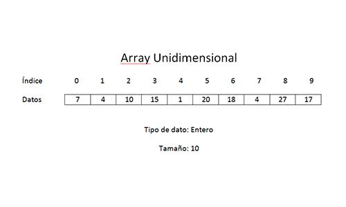
Posición: 1 (que es indicada por el subíndice)
Contenido: vector[1] = 4
EJEMPLO 1: Cargar 10 elementos en un vector, sumarlos y mostrar el resultado por pantalla.
Pasos para resolver este problema:
Introducir los datos en el vector de 10 elementos
Leer el vector.
Sumar los elementos.
Mostrar el resultado en pantalla.
En pseudocódigo sería:
xxxxxxxxxxALGORITMO VectorVAR ENTERO Vector[10]; ENTERO i; ENTERO Suma=0;INICIO PARA (i=0;i<10;i++) HACER ESCRIBIR("Introduce el valor de la posición ", i); LEER(Vector[i]); FIN PARA; PARA (i=0;i<10;i++) HACER Suma=Suma + Vector[i]; FIN PARA ESCRIBIR("La suma es: ", suma);FIN ALGORITMO
En Java sería:
xxxxxxxxxxpackage vector;
import java.util.Scanner;
public class Vector {
public static void main(String[] args) { // Declaración de variables int[] vector = new int[10]; int suma = 0; Scanner teclado = new Scanner(System.in); // Recorrido del vector pidiendo los números for(int i = 0; i < 10; i++){ System.out.println("Introduce el valor de la posición " + i); int valor = Integer.valueOf(teclado.nextLine()); vector[i] = valor; } // Recorremos el vector sumando las posiciones for(int i = 0; i < 10; i++){ suma = suma + vector[i]; } // Mostramos el resultado de la suma System.out.println("La suma es: " + suma); } }En Dart:
xxxxxxxxxximport 'dart:io';
void main() { // Declaración de variables List<int> vector = List.filled(10, 0); // Inicializamos un array de tamaño 10 int suma = 0; // Recorrido del vector pidiendo los números for (int i = 0; i < 10; i++) { print('Introduce el valor de la posición $i:'); int valor = int.parse(stdin.readLineSync()!); // Leemos el valor y lo convertimos a entero vector[i] = valor; }
// Recorremos el vector sumando las posiciones for (int i = 0; i < 10; i++) { suma += vector[i]; }
// Mostramos el resultado de la suma print('La suma es: $suma');}
EJEMPLO 2: Dados 50 números enteros, obtener el promedio de ellos (promedio entero). Mostrar por pantalla dicho promedio y los números ingresados que sean mayores que él.
Los pasos para resolver este problema son:
Pedir los valores de los 50 números.
Calcular el promedio y mostrarlo por pantalla.
Comprobar si cada valor de los 50 es superior al promedio y si es así mostrarlo por pantalla.
En pseudocódigo sería:
xxxxxxxxxxALGORITMO PromedioVectorVAR ENTERO vector[50]; ENTERO i; ENTERO suma=0; ENTERO promedio=0;INICIO PARA (i=0;i<50;i++) HACER ESCRIBIR("Introduce el valor de la posición " + i); LEER(vector[i]); suma = suma + vector[i]; FIN PARA; promedio=suma/50; ESCRIBIR("El promedio es: " + promedio); PARA (i=0;i<50;i++) HACER SI (vector[i]>promedio) ENTONCES ESCRIBIR("El número " + vector[i] + " que esta en la posición" + i + " es mayor que el promedio."); FIN SI FIN PARAFIN ALGORITMO
En Java sería:
xxxxxxxxxxpackage promediovector;
import java.util.Scanner;
public class PromedioVector {
public static void main(String[] args) { // Declaración de variables int[] vector = new int[50]; int suma = 0; float promedio = 0.0f; Scanner teclado = new Scanner(System.in); // Recorremos para llenar el vector for(int i=0; i < vector.length; i++){ System.out.println("Introduce el valor en la posición " + i); vector[i] = Integer.valueOf(teclado.nextLine()); suma = suma + vector[i]; } // Calculamos el proedio promedio = (suma / vector.length); System.out.println("El promedio es " + promedio); // Recorremos buscando que valores son mayores que el promedio for (int i=0; i < vector.length; i++){ if(vector[i] > promedio){ System.out.println("El número " + vector[i] + " que está en la posición " + i + " es mayor que el promedio."); } } }}En Dart:
xxxxxxxxxximport 'dart:io';
void main() { // Declaración de variables List<int> vector = List.filled(50, 0); // Vector de tamaño 50 inicializado con ceros int suma = 0; double promedio = 0.0; // Recorremos para llenar el vector for (int i = 0; i < vector.length; i++) { print('Introduce el valor en la posición $i:'); vector[i] = int.parse(stdin.readLineSync()!); // Leemos y convertimos la entrada a entero suma += vector[i]; // Sumamos el valor al total }
// Calculamos el promedio promedio = suma / vector.length; print('El promedio es $promedio');
// Recorremos buscando valores mayores que el promedio for (int i = 0; i < vector.length; i++) { if (vector[i] > promedio) { print('El número ${vector[i]} que está en la posición $i es mayor que el promedio.'); } }}
7.3 Vectores paralelos
Dos o más vectores que utilizan el mismo subíndice para acceder a elementos de distintos vectores se denominan vectores paralelos. Estos vectores pueden ser procesados paralelamente.
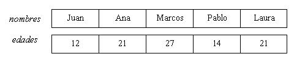
Como vemos en la imagen anterior, tenemos dos vectores de 5 elementos cada uno. En uno se almacenan los nombres de personas en el otro las edades de dichas personas.
Decimos que el vector nombres es paralelo al vector edades si en la componente 0 de cada vector se almacena información relacionada a una persona (Juan - 12 años). Es decir hay una relación entre cada componente de los dos vectores.
Esta relación la conoce únicamente el programador y se hace para facilitar el desarrollo de algoritmos que procesen los datos almacenados en las estructuras de datos.
Vamos a poner un ejemplo: se pide desarrollar un programa que permita cargar 5 nombres de personas y sus edades respectivas. Luego de realizar la carga por teclado de todos los datos imprimir los nombres de las personas mayores de edad (mayores o iguales a 18 años).
En pseudocódigo sería:
xxxxxxxxxxALGORITMO VectoresParalelosVAR CADENA nombres[5]; ENTERO edades[5];INICIO PARA (i=0;i<5;i++) HACER ESCRIBIR("Ingrese el nombre: "); LEER(nombres[i]); ESCRIBIR("Ingrese la edad: "); LEER(edades[i]); FIN PARA; PARA (i=0;i<5;i++) HACER SI (edades[i]>=18) ENTONCES ESCRIBIR(nombres[i]); FIN SI FIN PARAFIN ALGORITMO
La implementación en Java sería:
xxxxxxxxxxpackage vectoresparalelos;
import java.util.Scanner;
public class VectoresParalelos {
public static void main(String[] args) { // Declaración de variables Scanner teclado; String[] nombres; int[] edades; // Inicializamos las variables teclado=new Scanner(System.in); nombres=new String[5]; edades=new int[5]; // Solicitamos los datos for(int i=0;i<nombres.length;i++) { //Con length tenemos la longitud del vector System.out.print("Ingrese nombre para la posicion " + i + " :"); nombres[i]=teclado.next(); System.out.print("Ingrese edad para la posicion " + i + " :"); edades[i]=teclado.nextInt(); } // Buscamos los mayores de edad y lo mostramos System.out.println("Personas mayores de edad:"); for(int i=0;i<nombres.length;i++) { if (edades[i]>=18) { System.out.println(nombres[i]); } } } }
7.4 Matrices.
Una matriz es una estructura de datos que permite almacenar un CONJUNTO de datos del MISMO tipo.
Con un único nombre se define la matriz y por medio de DOS subíndices hacemos referencia a cada elemento de la misma (componente).
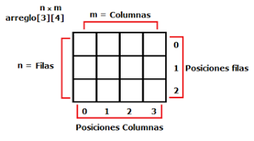
Como se ve en la imagen, se tiene un arreglo (o matríz) de 3 filas por 4 columnas siendo n=3 y m=4, la lógica de la estructura es muy similar a los arreglos unidimensionales (o vectores), cada índice inicia en 0 hasta el tamaño-1 por esa razón las posiciones de las filas van de 0 a 2 y el de las columnas de 0 a 3 en una matríz de 3x4.
Se puede ver que la matriz anterior es como si fueran 3 arreglos de tamaño 4 juntos, pues se puede entender cada fila como uno de ellos, por lo tanto la declaración, construcción e inicialización es muy similar.
Para definir una matriz hay que pensar en como se define un vector unidimensional, ya que en este caso, en vez de tener una sola dimensión tiene varias. Por ello, en vez de tener un corchete tendrá dos en su declaración. Hay 2 formas de declarar las matrices:
<tipoDato> identificador[ ] [ ];
Ej: int matrizDeEnteros[ ] [ ];
<tipoDato>[ ] [ ] identificador;
Ej: int[ ] [ ] matrizDeEnteros;
Donde tipoDato define el tipo de dato de cada uno de los valores que puede contener la matriz.
En cuanto a la construcción de la matriz existen 2 formas de construirlas:
la primera se usa cuando inicialmente no sabemos cuáles son los valores que va a contener la matriz, ya que luego serán ingresados, se crea con la siguiente estructura:
Identificador = new <tipoDato> [filas] [columnas];
Ej. matrizDeEnteros = new int[3] [4];
Cuando sabemos con exactitud cuáles son los valores que va a contener la matriz, aquí el proceso de construcción e inicialización se hace directo y se realiza de la siguiente manera:
Identificador = { {valor, valor,valor}, {valor, valor,valor}, {valor, valor,valor} };
int matriz[ ][ ] = {{1,2,3},{4,5,6},{7,8,9}};
El acceso a sus valores, tanto como asignación como para obtener el valor se realiza similar a los arreglos unidimensionales (vectores), o sea con los corchetes e indicando la posición a la que deseamos acceder (recordar que las posiciones van de 0 a n-1, siendo n el tamaño del arreglo).
matriz[3][2] = 7;
System.out.println("El valor en la posición (3,2) es =" + matriz[3][2]);
Cuando hablamos de la posición (3,2) de una matriz nos estamos refiriendo a los componentes x e y de la matriz, es decir, las posiciones vienen representadas por (x,y).
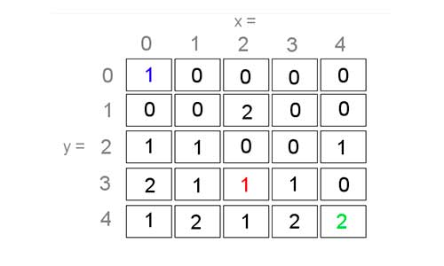
En la imagen anterior, si cogemos cualquier posición dentro del array como una posición (x,y):
(0,0) corresponde al número 1 azul.
(2,3) corresponde al número 1 rojo.
(4,4) corresponde al número 2 verde.
7.4.1 Lectura y escritura de matrices
Para realizar una inserción de datos o una lectura de una matriz utilizaremos dos bucles Para, ya que usaremos un bucle para recorrer el componente "x" y otro bucle para recorrer el componente "y".
En pseudocódigo quedaría de la siguiente forma:
xxxxxxxxxxPARA (i=0;i<10;i++) HACER PARA (j=0;j<10;j++) HACER LEER(matriz[i,j]); ESCRIBIR("El valor en la posición (" + i + "," + j + ") es ", matriz[i,j]); FIN PARAFIN PARA
Vamos a desarrollar un ejercicio como ejemplo. Para ello vamos a definir una matriz de 5x5, la cual tendrá estos valores. La idea es recorrer todos los valores de la matriz y sumarlos.
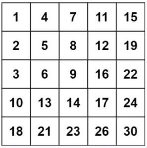
xxxxxxxxxxALGORITMO SumaMatrizVAR ENTERO matriz[5,5] = {{1,4,7,11,15}, {2,5,8,12,19}, {3,6,9,16,22}, {10,13,14,17,24}, {18,21,23,26,30}}; ENTERO i = 0; ENTERO j = 0; ENTERO suma = 0;INICIO PARA (i=0;i<5;i++) HACER PARA (j=0;j<5;j++) HACER suma = suma + Matriz[i,j]; FIN PARA FIN PARA ESCRIBIR("La suma de todos los valores de la matriz es: ", suma);FIN ALGORITMO;
Si lo implementamos en Java queda de la siguiente forma:
xxxxxxxxxxpackage sumamatriz;
public class SumaMatriz {
public static void main(String[] args) { int matriz[][] = {{1,4,7,11,15}, {2,5,8,12,19}, {3,6,9,16,22}, {10,13,14,17,24}, {18,21,23,26,30}}; int suma = 0; for(int i=0; i<5; i++){ for(int j=0; j<5; j++){ suma = suma + matriz[i][j]; } } System.out.println("La suma de todos los elementos de la matriz es: " + suma); } }En Dart:
xxxxxxxxxxvoid main() { // Declaración de la matriz List<List<int>> matriz = [ [1, 4, 7, 11, 15], [2, 5, 8, 12, 19], [3, 6, 9, 16, 22], [10, 13, 14, 17, 24], [18, 21, 23, 26, 30] ];
int suma = 0;
// Recorremos la matriz y sumamos todos los elementos for (int i = 0; i < matriz.length; i++) { for (int j = 0; j < matriz[i].length; j++) { suma += matriz[i][j]; } }
// Mostramos la suma de todos los elementos de la matriz print('La suma de todos los elementos de la matriz es: $suma');}